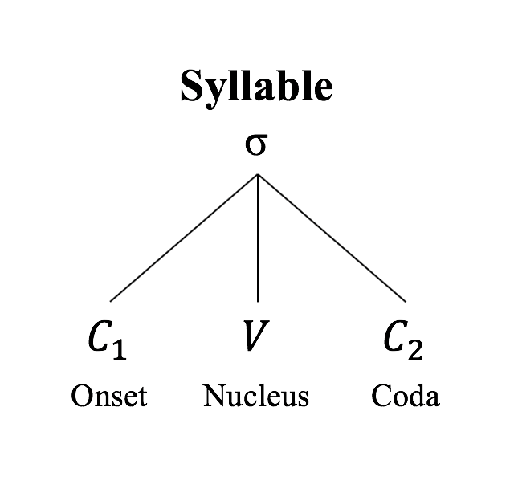

#언어이야기 6 #漢字特集 1
한자는 필자가 개인적으로 굉장히 좋아하는 언어 체계이다. (한자는 문자 체계이지만 한자의 매력은 비단 문자 그 자체에서 끝나지 않기 때문에 그냥 언어 체계라고 했다ㅎㅎ 엿장수 마음대로 언어학 용어를 쓰는 언어학 꿈나무) 그렇기에, 한자 특집 코너를 개설해 한자에 관한 흥미로운 내용을 다루는 시리즈물을 연재해볼 계획이다. 앞으로 몇 개의 한자 특집 글을 쓰게 될지는 모르겠지만 시간 될 때 열심히 써보도록 하겠다. 참고로 한자를 아예 모르는 분들을 위해: 漢字特集은 한자 특집이라고 읽는다.
스타벅스에서 음료를 시키고 카운터 앞에서 기다리는데, 옆에 설치되어 있던 배너가 눈에 들어왔다. 제주 말차로 만든 녹차 라떼를 홍보하는 배너였던 것으로 기억하는데, 영어로 'Matcha'로 적혀있었다. 멍을 때리면서 'Matcha'라는 단어를 바라보고 있었는데 갑자기 일본어 '抹茶'에서 유래했다는 것이 기억났다. 그런데, 문득 이의 광둥어 발음도 비슷하지 않을까라는 생각이 들었다.

조사해본 결과, 역시 그닥 다르지 않다! 사실 오늘의 글은 여기서 출발한다.
광둥어와 일본어, 그리고 한국어의 한자 발음들은 생각보다 비슷한 면이 굉장히 많다. 고대 중국어까지만 해도 syllable coda에 stop consonant가 왔다. Syllable coda가 뭔지 모르겠다면 미안하다... 한국어 언어학 용어를 잘 모른다. 밑의 그림을 보면 잘 알 수 있을 것이다.
그런데, 고대 중국어에서 현대 만다린으로 발전하면서 coda들이 죄다 행방불명 되었다. 대신, 고대 중국어가 주변 지방/주변국(중국 남부 지방, 한국, 일본 등지)로 퍼져나가면서 일본어와 한국어, 광둥어 등의 언어에서는 한자음에 고대 coda가 그대로/조금 변형된 형태로 남아있다.
<次回漢字特集予告>
다음 漢字特集에서는, 이번 글에서 살펴본 한자 발음의 역사의 전체적인 흐름을 좀 더 자세히 다뤄보도록 하겠다.